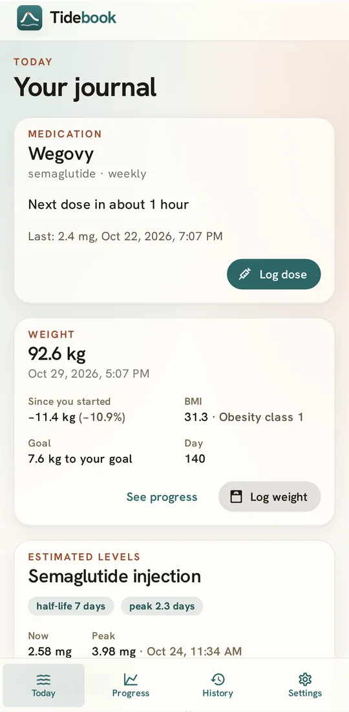
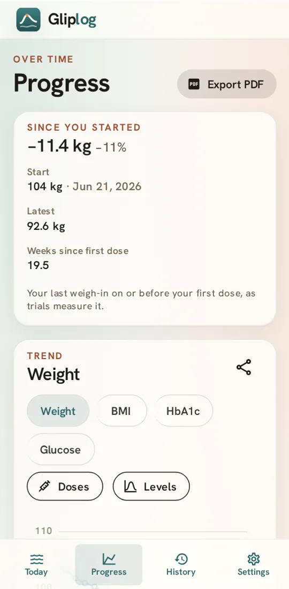
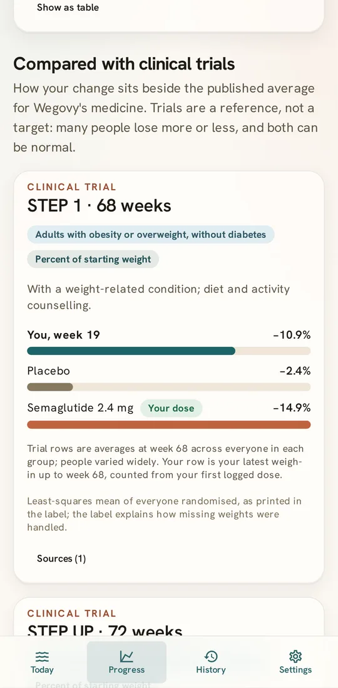

Doses, in two taps
Pick the dose from your medicine's label strengths, note the injection site if you like, and see when your next dose falls.
Free · Private · Offline
Log your doses and your weight, follow your BMI, and see how your progress sits beside the clinical trials. Everything stays on your phone.


What it does
Pick the dose from your medicine's label strengths, note the injection site if you like, and see when your next dose falls.
Weigh in whenever suits you. Add your height to follow your BMI, explained plainly, with an optional goal line.
See your change since your first dose next to the published averages from STEP, SURMOUNT, SURPASS and more, each linked to its prescribing label.
An estimate of how much medicine remains between doses, from the published half-life. Switch brands and the curve carries on.
Enter your vial's strength once and every dose also shows the units to draw on a U-100 syringe.
Every profile field is optional, gender is your own word for it, and nothing praises or judges a number on the scale.

Honest numbers
Private by design
Tidebook has no account, no server and no analytics. It runs entirely on your device, works with no connection, and the Android app doesn't even ask for network access.
Your only copy is on your phone, so save a backup file now and then from Settings. You can erase everything there too, any time.
Medicines
Brand-name pens and tablets, compounded vials, or anything else you name yourself.
Brand names are the trademarks of their respective owners and are used only to identify the medicines. Tidebook is not affiliated with, endorsed by or sponsored by Novo Nordisk, Eli Lilly or any other manufacturer or pharmacy.
Get Tidebook
Open tidebook.github.io/app on your phone, then add it to your home screen. It opens full screen and works offline, like any other app.
| Phone or tablet | Steps |
|---|---|
| iPhone or iPad, Safari | Share, then Add to Home Screen |
| iPhone or iPad, Chrome | Share (in the address bar), then Add to Home Screen |
| Android, Chrome or Edge | Menu, then Install app (or Add to Home screen) |
| Android, Firefox | Menu, then Add app to Home screen |
An Android app for Google Play and F-Droid is on its way, built from the same open source code.
Questions
Yes. There's no subscription, no ads and no premium tier. It costs almost nothing to run because there's no server.
In your browser's storage on your device, or inside the Android app. Nothing is sent anywhere. If you clear this site's data in your browser, or uninstall, it's gone, so keep a backup file.
Save a backup in Settings, move the file to the new phone, and restore it there. On iPhone, Safari and the home-screen app keep separate data, so use a backup to move between them too.
No. It shows the strengths and schedules printed on each medicine's label as a reference, and does the arithmetic for you. Your prescriber decides your dose.
Only about 1% to 2% of a semaglutide tablet is absorbed, and the share varies day to day. An estimate from the tablet strength would be wrong, so Tidebook doesn't draw one.
No. Tidebook is a journal and a calculator. It isn't a medical device and doesn't replace your prescriber, pharmacist or care team.